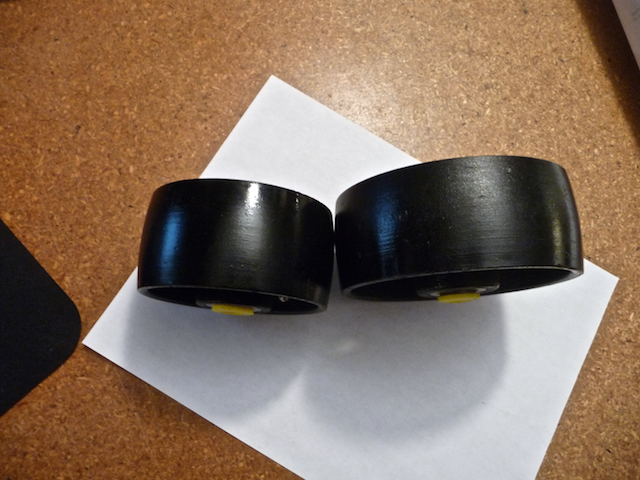

Danger Will Robinson! The cast iron wheels pictured below are the ones that were spec’ed in Keith Cornelius’s 1997 Tech Expo article_An Inexpensive, Human-Powered Roll-Former_. (Grainer part numbers are #3G262 and #3G263.)
Obviously they’ve changed a little bit since 1997; the new “feature” is a crown to the surface of the wheel. Unless you’re looking to mangle your steel whilst bending, I suggest you find flatter wheels.
I suggest finding flatter iron wheels through Mcmaster-Carr. Their 4” wheels are comparable in price, though Mcmaster’s 5” wheels are around $30 while Grainger’s 5” are around $13. 